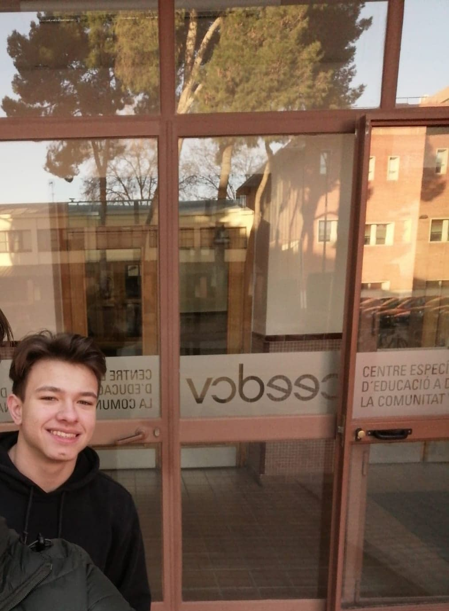

Ik ben in het middelbaar 3 weken op stage mogen gaan in het buitenland. Deze stage bevond zich in Spanje, Valencia. Ik mocht in CEEDCV helpen met het netwerk te onderhouden en wat taken doen voor hun. Er bleek wel een misverstand te zijn want bij de stage plek van een medestudent hadden ze een ICT'er verwacht en die kregen ze niet. Omdat ik al klaar was met meeste van mijn taken bij CEEDCV werd er aan mij aangeboden om ook op het andere stage plek te gaan werken. Ik heb hierop ja gezegd en en 2 dagen kunnen gaan helpen bij het andere stage bedrijf waar ik ook het netwerk mocht helpen onderhouden. Ik heb daar zelfs geholpen met switches te configureren en te installeren ookal kon de stage mentor geen 1 woord engels. Mijn stage was zeer succesvol verlopen en iedereen was zeer te vreden over mijn prestaties daar. Het was ook een geweldige ervaring die mij voor altijd zal bij blijven
Mijn werkervaring is ook veel in horeca's. Ik heb al een paar jaar als kelner zitten werken in horeca's om wat geld te verdienen en te sparen. Maar ik merkte wel dat horeca niks meer voor mij is en was ermee gestopt. Ik heb hier wel veel uit geleerd van hoe mensen ontvangen en bedienen. Door te werken in een horeca zijn mijn sociale skills heel hard omhoog gegaan.